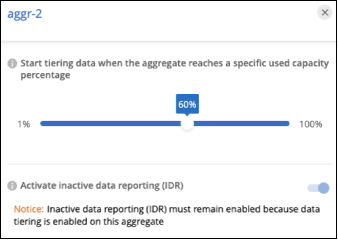

시작하십시오
시작하십시오
클러스터의 데이터 계층화 관리
 변경 제안
변경 제안
이제 사내 ONTAP 클러스터에서 데이터 계층화를 설정했으므로 추가 볼륨의 데이터를 계층화하고, 볼륨의 계층화 정책을 변경하고, 추가 클러스터를 검색할 수 있습니다.
클러스터의 계층화 정보 검토
클라우드 계층에 있는 데이터의 양과 디스크에 있는 데이터의 양을 확인하려는 경우가 있을 수 있습니다. 또는 클러스터 디스크에서 핫 데이터와 콜드 데이터의 양을 확인할 수도 있습니다. BlueXP 계층화는 각 클러스터에 대해 이 정보를 제공합니다.
-
왼쪽 탐색 메뉴에서 * 이동성 > 계층화 * 를 선택합니다.
-
Clusters * 페이지에서 메뉴 아이콘을 클릭합니다
 클러스터의 경우 * Cluster info * 를 선택합니다.
클러스터의 경우 * Cluster info * 를 선택합니다.
-
클러스터에 대한 세부 정보를 검토합니다.
예를 들면 다음과 같습니다.

Cloud Volumes ONTAP 시스템에서는 디스플레이가 다릅니다. Cloud Volumes ONTAP 볼륨은 데이터를 클라우드로 계층화할 수 있지만 BlueXP 계층화 서비스는 사용하지 않습니다. "Cloud Volumes ONTAP 시스템에서 비활성 데이터를 저비용 오브젝트 스토리지로 계층화하는 방법을 알아보십시오".
또한 가능합니다 "Digital Advisor에서 클러스터의 계층화 정보를 봅니다" 이 NetApp 제품에 대해 잘 아실 것입니다. 왼쪽 탐색 창에서 * 클라우드 권장사항 * 을 선택하면 됩니다.

추가 볼륨의 데이터 계층화
새 볼륨을 생성한 후 등 언제든지 추가 볼륨에 대한 데이터 계층화를 설정할 수 있습니다.

|
오브젝트 스토리지는 처음에 클러스터에 대한 계층화를 설정할 때 이미 구성되어 있으므로 구성할 필요가 없습니다. ONTAP는 추가 볼륨의 비활성 데이터를 동일한 오브젝트 저장소로 계층화합니다. |
-
왼쪽 탐색 메뉴에서 * 이동성 > 계층화 * 를 선택합니다.
-
클러스터 * 페이지에서 클러스터에 대한 * 계층 볼륨 * 을 클릭합니다.

-
Tier Volumes_ 페이지에서 계층화를 구성할 볼륨을 선택하고 계층화 정책 페이지를 시작합니다.
-
모든 볼륨을 선택하려면 제목 행(
 )를 클릭하고 * 볼륨 구성 * 을 클릭합니다.
)를 클릭하고 * 볼륨 구성 * 을 클릭합니다. -
여러 볼륨을 선택하려면 각 볼륨에 대한 확인란을 선택합니다(
 )를 클릭하고 * 볼륨 구성 * 을 클릭합니다.
)를 클릭하고 * 볼륨 구성 * 을 클릭합니다. -
단일 볼륨을 선택하려면 행(또는)을 클릭합니다
 아이콘)을 클릭합니다.
아이콘)을 클릭합니다.
-
-
Tiering Policy_대화 상자에서 계층화 정책을 선택하고 선택한 볼륨의 냉각 날짜를 필요에 따라 조정한 다음 * Apply * 를 클릭합니다.

선택한 볼륨의 데이터가 클라우드로 계층화되기 시작합니다.
볼륨의 계층화 정책 변경
볼륨에 대한 계층화 정책을 변경하면 ONTAP에서 콜드 데이터를 오브젝트 스토리지에 계층화하는 방식이 변경됩니다. 이 변경은 정책을 변경하는 순간부터 시작됩니다. 볼륨에 대한 후속 계층화 동작만 변경하며 데이터를 클라우드 계층으로 소급 이동하지는 않습니다.
-
왼쪽 탐색 메뉴에서 * 이동성 > 계층화 * 를 선택합니다.
-
클러스터 * 페이지에서 클러스터에 대한 * 계층 볼륨 * 을 클릭합니다.
-
볼륨의 행을 클릭하고 계층화 정책을 선택한 다음 필요에 따라 냉각 일을 조정하고 * 적용 * 을 클릭합니다.
-
참고: * "Tiered Data 검색" 옵션이 표시되면 를 참조하십시오 클라우드 계층에서 성능 계층으로 데이터 마이그레이션 를 참조하십시오.
-
계층화 정책이 변경되고 새 정책에 따라 데이터가 계층화되기 시작합니다.
비활성 데이터를 오브젝트 저장소에 업로드하는 데 사용할 수 있는 네트워크 대역폭을 변경합니다
클러스터에 대해 BlueXP 계층화를 활성화하면 기본적으로 ONTAP는 무제한 대역폭을 사용하여 작업 환경의 볼륨에서 객체 스토리지로 비활성 데이터를 전송할 수 있습니다. 계층화 트래픽이 일반 사용자 워크로드에 영향을 주는 경우 전송 중에 사용되는 네트워크 대역폭의 양을 조절할 수 있습니다. 최대 전송 속도로 1에서 10,000 Mbps 사이의 값을 선택할 수 있습니다.
-
왼쪽 탐색 메뉴에서 * 이동성 > 계층화 * 를 선택합니다.
-
Clusters * 페이지에서 메뉴 아이콘을 클릭합니다
클러스터의 경우 * 최대 전송 속도 * 를 선택합니다.
-
Maximum transfer rate_page에서 * Limited * 라디오 버튼을 선택하고 사용할 수 있는 최대 대역폭을 입력하거나 * Unlimited * 를 선택하여 제한이 없음을 나타냅니다. 그런 다음 * 적용 * 을 클릭합니다.

이 설정은 데이터를 계층화하는 다른 클러스터에 할당된 대역폭에 영향을 주지 않습니다.
볼륨에 대한 계층화 보고서를 다운로드합니다
계층 볼륨 페이지의 보고서를 다운로드하여 관리 중인 클러스터에 있는 모든 볼륨의 계층화 상태를 검토할 수 있습니다. 을 클릭하기만 하면 됩니다  단추를 클릭합니다. BlueXP 계층화는 .csv 파일을 생성하여 필요에 따라 다른 그룹에 검토 및 전송할 수 있습니다. CSV 파일에는 최대 10,000개의 데이터 행이 포함됩니다.
단추를 클릭합니다. BlueXP 계층화는 .csv 파일을 생성하여 필요에 따라 다른 그룹에 검토 및 전송할 수 있습니다. CSV 파일에는 최대 10,000개의 데이터 행이 포함됩니다.

클라우드 계층에서 성능 계층으로 데이터 마이그레이션
클라우드에서 액세스하는 계층형 데이터는 "재가열"되어 성능 계층으로 다시 이동할 수 있습니다. 하지만 클라우드 계층에서 성능 계층으로 데이터를 사전 예방적으로 승격하려는 경우 _Tiering Policy_Dialog를 사용하여 이러한 작업을 수행할 수 있습니다. 이 기능은 ONTAP 9.8 이상을 사용할 때 사용할 수 있습니다.
볼륨에 대한 계층화 사용을 중단하거나 모든 사용자 데이터를 성능 계층에 유지하되 스냅샷 복사본을 클라우드 계층에 보관하려는 경우 이 작업을 수행할 수 있습니다.
두 가지 옵션이 있습니다.
| 옵션을 선택합니다 | 설명 | 계층화 정책에 미치는 영향 |
|---|---|---|
모든 데이터를 다시 가져옵니다 |
이 명령어는 클라우드에서 계층화된 모든 볼륨 데이터와 스냅샷 복사본을 검색하여 성능 계층으로 상향 이동합니다. |
계층화 정책이 "정책 없음"으로 변경되었습니다. |
액티브 파일 시스템을 다시 실행합니다 |
활성 파일 시스템 데이터만 클라우드에서 계층화하여 성능 계층으로 상향 이동합니다(스냅샷 복사본은 클라우드에 남아 있음). |
계층화 정책이 "콜드 스냅샷"으로 변경되었습니다. |

|
클라우드에서 전송되는 데이터 양에 따라 클라우드 공급자가 비용을 청구할 수 있습니다. |
성능 계층에 클라우드에서 다시 이동되는 모든 데이터에 사용할 공간이 충분한지 확인합니다.
-
왼쪽 탐색 메뉴에서 * 이동성 > 계층화 * 를 선택합니다.
-
클러스터 * 페이지에서 클러스터에 대한 * 계층 볼륨 * 을 클릭합니다.
-
를 클릭합니다
볼륨 아이콘을 클릭하고 사용할 검색 옵션을 선택한 다음 * 적용 * 을 클릭합니다.
계층화 정책이 변경되고 계층화된 데이터가 성능 계층으로 다시 마이그레이션되기 시작합니다. 클라우드에 있는 데이터의 양에 따라 전송 프로세스에 시간이 다소 걸릴 수 있습니다.
애그리게이트에서 계층화 설정 관리
온프레미스 ONTAP 시스템의 각 애그리게이트에는 조정할 수 있는 두 가지 설정, 즉 계층화 충만 임계값 및 비활성 데이터 보고가 활성화되어 있는지 여부가 있습니다.
- 계층화 전체 임계값
-
임계값을 더 낮은 수로 설정하면 계층화를 수행하기 전에 성능 계층에 저장해야 하는 데이터의 양이 줄어듭니다. 활성 데이터가 거의 없는 대규모 Aggregate에 유용할 수 있습니다.
임계값을 더 높은 수로 설정하면 계층화를 수행하기 전에 성능 계층에 저장해야 하는 데이터의 양이 증가합니다. 이 기능은 애그리게이트가 최대 용량에 근접할 때만 계층화하도록 설계된 솔루션에 유용할 수 있습니다.
- 비활성 데이터 보고
-
비활성 데이터 보고(IDR)는 31일 냉각 기간을 사용하여 비활성으로 간주되는 데이터를 결정합니다. 계층화하는 콜드 데이터의 양은 볼륨에 설정된 계층화 정책에 따라 달라집니다. 이 양은 31일 냉각 기간을 사용하여 IDR에서 감지한 콜드 데이터 양과 다를 수 있습니다.
비활성 데이터 및 절약 기회를 식별하는 데 도움이 되므로 IDR을 계속 사용하는 것이 좋습니다. 데이터 계층화가 Aggregate에서 활성화된 경우 IDR은 활성화 상태를 유지해야 합니다.
-
클러스터 * 페이지에서 선택한 클러스터에 대한 * 고급 설정 * 을 클릭합니다.

-
고급 설정 페이지에서 집계 메뉴 아이콘을 클릭하고 * 집계 수정 * 을 선택합니다.

-
표시되는 대화 상자에서 fullness 임계값을 수정하고 비활성 데이터 보고를 활성화 또는 비활성화할지 여부를 선택합니다.

-
적용 * 을 클릭합니다.
운영 상태 수정
장애가 발생할 수 있습니다. 그러면 BlueXP 계층화는 클러스터 대시보드에 "Failed" 운영 상태를 표시합니다. 상태는 ONTAP 시스템과 BlueXP의 상태를 반영합니다.
-
작동 상태가 "Failed(실패)"인 모든 클러스터를 식별합니다.
-
정보 "i" 아이콘 위로 마우스를 가져가면 오류 원인이 표시됩니다.
-
문제 해결:
-
ONTAP 클러스터가 작동 중이고 객체 스토리지 공급자에 대한 인바운드 및 아웃바운드 연결이 있는지 확인합니다.
-
BlueXP의 BlueXP 계층화 서비스, 개체 저장소 및 검색된 ONTAP 클러스터에 대한 아웃바운드 연결이 있는지 확인합니다.
-
BlueXP 계층화에서 추가 클러스터 검색
검색되지 않은 온프레미스 ONTAP 클러스터를 계층화_클러스터_페이지에서 BlueXP에 추가하여 클러스터에 대한 계층화를 설정할 수 있습니다.
추가 클러스터를 검색할 수 있는 버튼이 Tiering_On-Premise Dashboard_페이지에도 나타납니다.
-
BlueXP 계층화에서 * 클러스터 * 탭을 클릭합니다.
-
검색되지 않은 클러스터를 보려면 * 검색되지 않은 클러스터 표시 * 를 클릭합니다.

NSS 자격 증명이 BlueXP에 저장된 경우 계정의 클러스터가 목록에 표시됩니다.
NSS 자격 증명이 BlueXP에 저장되지 않은 경우, 먼저 자격 증명을 추가하라는 메시지가 표시된 후 검색되지 않은 클러스터를 볼 수 있습니다.

-
BlueXP를 통해 관리하려는 클러스터에 대해 * 클러스터 검색 * 을 클릭하고 데이터 계층화를 구현합니다.
-
Cluster Details_페이지에서 admin 사용자 계정의 암호를 입력하고 * Discover * 를 클릭합니다.
클러스터 관리 IP 주소는 NSS 계정의 정보에 따라 채워집니다.
-
Details & Credentials_ 페이지에서 클러스터 이름이 작업 환경 이름으로 추가되므로 * Go * 를 클릭합니다.
BlueXP는 클러스터를 검색하고 클러스터 이름을 작업 환경 이름으로 사용하여 Canvas의 작업 환경에 추가합니다.
오른쪽 패널에서 이 클러스터에 대한 계층화 서비스 또는 기타 서비스를 활성화할 수 있습니다.
모든 BlueXP Connector에서 클러스터를 검색합니다
사용자 환경의 모든 스토리지를 관리하기 위해 여러 커넥터를 사용하는 경우 계층화를 구현할 클러스터가 다른 커넥터에 있을 수 있습니다. 어떤 커넥터가 특정 클러스터를 관리하고 있는지 확실하지 않은 경우 BlueXP 계층화를 사용하여 모든 커넥터를 검색할 수 있습니다.
-
BlueXP 계층화 메뉴 모음에서 작업 메뉴를 클릭하고 * 모든 커넥터에서 클러스터 검색 * 을 선택합니다.

-
표시된 검색 대화 상자에서 클러스터 이름을 입력하고 * 검색 * 을 클릭합니다.
BlueXP 계층화에서 클러스터를 찾을 수 있는 경우 Connector의 이름이 표시됩니다.